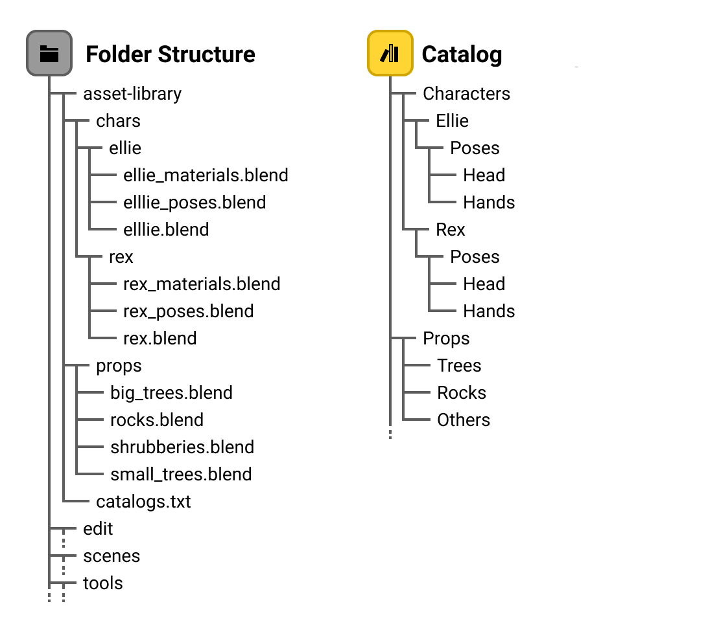
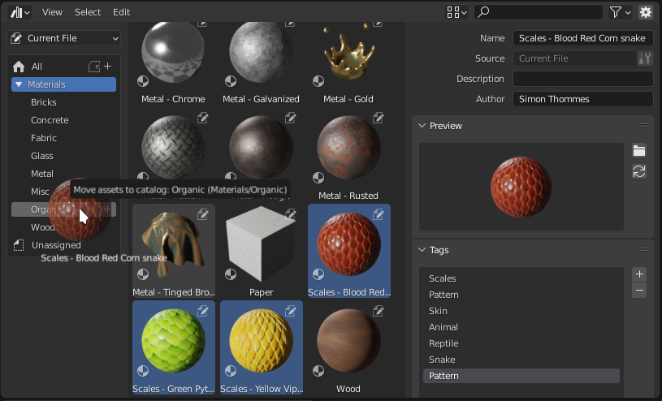
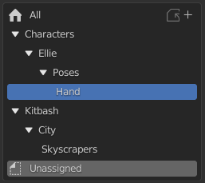

Asset Catalog¶
Asset Catalog giúp bạn tổ chức asset. Chúng trông hơi giống thư mục file, nhưng hoàn toàn độc lập với vị trí các blend-file của bạn. Hãy gán mỗi asset trong một blend-file vào catalog riêng của nó, hoặc dùng một catalog lớn duy nhất chứa tất cả asset của tất cả blend-file gộp lại. Mọi thứ đều tùy thuộc vào bạn.
Tương tự Collections, catalog có thể lồng nhau, tức là bạn có thể có một catalog chính chứa vài catalog con. Ví dụ, điều này cho phép bạn có một catalog asset cho "Furniture" với các catalog con "Tables", "Chairs", "Lamps", v.v...
Để biết thông tin kỹ thuật hơn, xem Asset Catalogs trong Tài liệu Nhà phát triển Blender.


Ví dụ về cấu trúc hệ thống file và catalog.¶


Ví dụ về cấu trúc hệ thống file và catalog.¶
Vị trí gốc của Asset¶
Có thể có bao nhiêu catalog tùy ý, nhưng một asset chỉ có thể được gán vào một catalog duy nhất tại một thời điểm. Điều này giống hệ thống file, nơi một file chỉ nằm trong một thư mục (bỏ qua những thứ nâng cao như symbolic link).
Bản thân catalog có thể lồng nhau và được di chuyển bằng cách kéo thả. Di chuyển một catalog sẽ không làm thay đổi các asset bên trong nó; chúng đơn giản là đi theo catalog đến vị trí mới.
Chọn một catalog trong Asset Browser sẽ hiển thị mọi asset trong catalog đó và trong các catalog con. Vì vậy, trong ví dụ trước, chọn Characters/Ellie/Poses cũng sẽ hiển thị asset từ Characters/Ellie/Poses/Head và Characters/Ellie/Poses/Hands.
Tạo Catalog¶
Catalog mới có thể được tạo trong Asset Browser qua . Sau khi catalog được tạo, bạn có thể nhấp đúp LMB vào tên của nó trong vùng Source List của editor để đặt cho catalog một cái tên mô tả hơn. Catalog cũng có thể được tạo trong vùng này bằng cách nhấp vào biểu tượng dấu cộng ở đầu Tree View.
Gán Asset¶

Gán một lựa chọn các asset "Scale material" vào một catalog.¶
Để gán asset vào một catalog, chỉ cần chọn và kéo các asset thả lên trên catalog.
Mẹo
Bạn có thể gán một asset vào catalog "Unassigned", điều này sẽ loại nó khỏi mọi catalog hiện có.
Lưu Catalog¶
Lưu catalog sẽ biến mọi chỉnh sửa trên mọi catalog thành vĩnh viễn bằng cách ghi thiết lập hiện tại vào asset library. Catalog có thể được lưu trong Asset Browser qua . Sau khi catalog được tạo, bạn có thể nhấp đúp LMB vào tên của nó; catalog cũng có thể được lưu trong vùng Source List của editor bằng cách nhấp vào biểu tượng lưu ở đầu Tree View.
Các thành phần của một Catalog¶
Mỗi catalog gồm một catalog path (đường dẫn catalog), một UUID, và một simple name (tên đơn giản). Thông thường bạn chỉ cần làm việc với đường dẫn catalog; phần còn lại dành cho việc dùng nội bộ của Blender và/hoặc cho các tình huống khẩn cấp.
Đường dẫn Catalog¶
Đường dẫn của catalog xác định nó được hiển thị ở đâu trong hệ thống phân cấp catalog. Ví dụ là Characters/Ellie/Poses/Hand hoặc Kitbash/City/Skyscrapers, sẽ cho ra cây catalog như sau. Catalog được tô sáng có đường dẫn Characters/Ellie/Poses/Hand.


Ví dụ về cây asset catalog.¶
UUID¶
Mỗi catalog có một UUID, vốn thường bị ẩn khỏi giao diện người dùng (bật Developer Extras và tùy chọn thử nghiệm Asset Debug Info để thấy chúng). Đây là thứ được lưu trong asset, và là thứ quyết định "danh tính" của catalog. Hệ quả là, một catalog có thể được đổi tên hoặc di chuyển qua lại (tức là bạn có thể đổi đường dẫn của nó), và mọi asset chứa trong nó sẽ đi theo nó. Việc này chỉ cần thay đổi bản thân catalog, chứ không cần đụng đến bất kỳ blend-file asset nào.
Simple Name¶
Mỗi catalog có một simple name tùy chọn. Tên này được lưu cùng với UUID trong mỗi asset. Mục đích là để con người vẫn có thể nhận ra catalog mà asset đã được gán vào, kể cả khi catalog definition file (xem dưới đây) bị mất.
Giống UUID, simple name thường bị ẩn khỏi giao diện người dùng. Bật Developer Extras trong tùy chỉnh giao diện để hiển thị nó trong Asset Browser.
File Định nghĩa Catalog¶
Asset catalog được lưu trong Catalog Definition File (CDF). Blender 3.0 hỗ trợ một CDF duy nhất cho mỗi asset library. Nó được lưu trong blender_assets.cats.txt ở thư mục gốc của asset library. Nếu file không tồn tại, Blender sẽ tạo nó khi catalog được lưu. Khi catalog thay đổi, Blender cập nhật file đó, nhưng cũng tạo một bản sao lưu của trạng thái trước đó vào file tên blender_assets.cats.txt~.
Ghi vào File Nào¶
Asset catalog có thể được lưu độc lập với blend-file; trình chỉnh sửa catalog có nút "Save" riêng của mình.
Format¶
Catalog Definition File (CDF) là những file văn bản khá đơn giản, mã hóa UTF-8. Mỗi CDF gồm một chỉ báo phiên bản, và một dòng văn bản cho mỗi catalog. Mỗi dòng catalog được phân tách bằng dấu hai chấm, theo dạng {UUID}:{path}:{simple name}.
Ví dụ¶
Đây là ví dụ về một file định nghĩa catalog hợp lệ:
# This is an Asset Catalog Definition file for Blender.
#
# Empty lines and lines starting with `#` will be ignored.
# The first non-ignored line should be the version indicator.
# Subsequent lines are of the format "CATALOG_UUID:catalog/path/for/assets:simple catalog name"
VERSION 1
313ea471-7c81-4de6-af81-fb04c3535d0e:catalog/without/simple/name:
ee9c7b60-02f1-4058-bed6-539b8d2a6d34:character/Ellie/poselib:character-Ellie-poselib
cd66bf52-58f4-45cb-a4e2-dc0e0ee8f3fe:character/Ellie/poselib:character-Ellie
4eb44ec6-3424-405b-9782-ca006953e799:character/Ellie/poselib/white space:character-Ellie-poselib-white space
b63ed357-2511-4b96-8728-1b5a7093824c:character/Ružena/poselib:Ružena pose library
dcdee4df-926e-4d72-b995-33106983bb9a:character/Ružena/poselib/face:Ružena face
fb698f2e-9e2b-4146-a539-3af292d44899:character/Ružena/poselib/hand:Ružena hands
Đường dẫn Catalog hợp lệ¶
Đường dẫn catalog tuân theo các quy tắc sau:
Mọi đường dẫn đều là tuyệt đối; không có khác biệt giữa
/a/bvàa/b.Chỉ dùng
/làm dấu phân tách (không dùng\; hãy nghĩ nó ít hơn như đường dẫn filesystem và nghĩ nhiều hơn như URL).Không được rỗng (bắt buộc để có một catalog hợp lệ).
Không có thành phần rỗng (nên không được
a//b;a/bthì ổn).Ký tự không hợp lệ:
:,\.Đường dẫn luôn được diễn giải theo UTF-8.